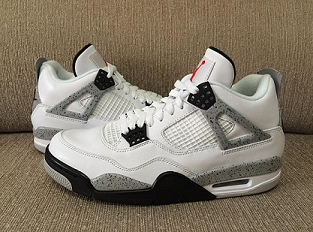
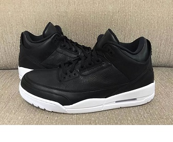

- This shoe is called the White Cement 4. This has to be one of the dopest Jordans ever. The classic all White with the cement colored midsole. This shoe is great for a night out on the town.
- This shoe came out in February and retailed for $220
- We give this shoe a 5/5 rating
- This shoe was hyped up because they were a classic with the Nike Air on the back of the shoe

- This shoe is called the baron 9. The name baron comes from the Minor League Baseball team that Michael jordan played for. He used their color way and put it on his signature shoes. This shoe will forever be fresh and maybe a classic because it shows legacy in his baseball career.
- This shoe came out in April of 2014 and retailed for $170
- We give this shoe a 4/5 because after a while it will get uncomfortable
- This shoe was hyped because it was in rememberance of his baseball career

- This shoe is called the Cyber Monday 3. This is the second release od the jordan 3 since 2014. Not many people know about the release of this shoe. The jordan 3 overall is a good durable and comfortable shoe that you can wear in any kind of weather and wear with any kind of clothing.
- This shoe comes out in November of 2016 and retails for $190
- We give this shoe za 5/5 because this is going to be the first ever Jordan 3 with only 2 colors on the shoe and it is just very original
- We cant really say if this shoe is trend or hype because not very people know about them but if I was to say so I would say trend.